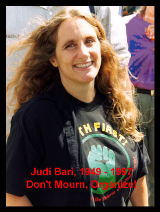
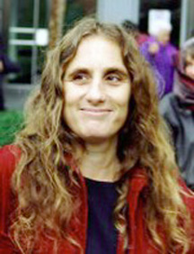

Judi Bari (1949-1997)
Tribute by Nicholas Wilson, Albion Monitor, March 1997
 Judi Bari was a fighter and organizer for many labor, social, and environmental justice causes.
The common denominator was her indignation over injustice, whether in the form of war, racism, sexism, political repression, economic exploitation, or the unnecessary destruction of ecosystems.
Bari was a gifted and inspiring speaker who was widely regarded as the principal leader of the Earth First! movement in Northern California. She led Earth First! in her region to embrace the use of nonviolent direct action and to renounce the use of tree-spiking, or any other tactic that could lead to injuries to timber and mill workers. Coming from a labor organizing background, she was quick to point out that it was not the workers but the giant corporations who should be the target of environmental reformers.
While a student at the University of Maryland, she "majored in anti-Vietnam War rioting," as she put it. After dropping out of college in her fifth year, she got a job as a blue-collar worker and quickly got involved in union organizing. As a clerk for a large grocery chain she became the union shop steward in the early '70s. Only about five feet tall, she took karate classes for self-defense, and reached the black belt level. Later she broke a gender barrier by passing a qualifying test requiring her to lift and shoulder a 70 lb. mail sack, and got a job at the U.S. Washington Bulk Mail Center near the nation's capital. There she continued her union organizing, publishing a workers' newsletter and organizing a successful wildcat strike for better working conditions.
After meeting her husband-to-be Mike Sweeney on the East Coast, she moved to California in 1979, where they married and lived in Sonoma County, an hour's drive north of San Francisco. She turned her attention to U.S. support for repressive regimes in Central America, working with Pledge of Resistance. Several years later, after the couple had moved further north to Mendocino County, they divorced amicably, sharing the care of their two daughters.
Bari's most significant focus, the redwoods, began when she was working as a carpenter, building a luxury country house for an urban executive. She got curious about the beautiful fine-grained redwood boards she was hammering nails into. She was outraged when she learned they came from 1000 to 2000 year old trees, and she decided to work to preserve the remaining old-growth redwood forests. In 1988 she became the contact person for Earth First! in Mendocino County, working out of the Mendocino Environmental Center in the county seat, Ukiah.
The first significant Earth First! campaign she helped organize was a blockade of logging on public land near Cahto Peak, in the Coast Range mountains in northern Mendocino County. Ultimately, several thousand acres of forest were spared from the chainsaws and became part of the Cahto Wilderness area.
As Senator Hayden recognized, Bari was one of the prime organizers of efforts to preserve Headwaters Forest in Humboldt County. As her friend Darryl Cherney put it, "When Greg King and I were organizing demonstrations, dozens, maybe hundreds of people turned out, but when Judi got involved, thousands came."
Cherney and Bari teamed up in 1988. Cherney told how he had first met her. He was having trouble designing a brochure for his own campaign for Congress. Bari walked into the Mendocino Environmental Center, where he was working, and MEC coordinator Betty Ball knew Bari was a talented graphic artist, so she introduced the two and suggested Bari might help with the layout. Cherney remembered how Bari worked ably on the layout, all the while making fun of him for his conceit in running. He said he instantly fell in love with her, and they became for the next two years a romantic couple as well as an Earth First! organizing team.
Betty Ball credited Bari with the feminization of Earth First!. "It had been incredibly male-dominated prior to Judi's entrance. There were women involved but none were as successful as Judi in putting the feminine spin into it, and getting rid of some of the macho chest-beating that had been prevalent in Earth First! prior to that. Judi's influence then allowed many more women to get involved, in more influential ways than had been possible previously. Judi also innately understood the importance of community-based organizing, as opposed to the nomadic style that Earth First! had before that."
In a 1992 Ms. Magazine article, Bari pointed out that Earth First! had been founded by a group of five men. She wrote, "I was attracted to Earth First! because they were the only ones willing to put their bodies in front of the bulldozers and the chainsaws to save the trees. They were also funny, irreverent, and they played music. But it was the philosophy of Earth First! that ultimately won me over. This philosophy, known as biocentrism or deep ecology, states that the Earth is not just here for human consumption. All species have a right to exist for their own sake, and humans must learn to live in balance with the needs of nature, instead of trying to mold nature to fit the wants of humans."
In November 1988 Bari defended a Ukiah Planned Parenthood Clinic against an anti-abortion demonstration. Joining other counter-demonstrators, Bari and Cherney sang a song they had composed titled "Shall the Fetus Be Aborted," sung to the tune of "Will the Circle Be Unbroken." Bari realized years later, after viewing videotape of the event, how outrageous they had been, and how their counter-demonstration -- and particularly that song -- had horrified the anti- abortionists.
She said she had not realized at the time how much it would shock them, but that she had intended for them to experience how women clients of the clinic might feel when confronted with shouting, singing, demonstrators holding up photos of aborted fetuses.
Music was an integral part of Bari's organizing style. She had taken violin lessons while growing up, and her violin was transformed into her "fiddle" when she moved to California. She rarely showed up at any rally, demonstration, or public appearance without breaking out the fiddle and joining others in playing a few songs. She used songs as a unifying tool in the tradition of labor organizing, but also as a weapon on the front lines against her targets, and as a morale booster around the campfire or while on the road. There is an Earth First! songbook published including some of her songs, titled Up Rise Singing (the title a take-off on Rise Up Singing, the classic folk song book).
Bari continued her labor activism when she joined an effort to support workers doused with toxic PCBs in a 1989 Georgia-Pacific sawmill accident in Fort Bragg, California. The company told the workers and the press the spill was just mineral oil, but testing showed it was laden with PCBs. Bari helped others organize the injured workers into Local #1 of the Industrial Workers of the World (I.W.W. or Wobblies) and gave technical support for their successful case in U.S. Labor Court.
In October, 1989, Bari wrote an article for the "Industrial Worker" newspaper in which she argued that the time was ripe for the Wobblies to organize among timber workers.
In April 1990, after Louisiana-Pacific closed one sawmill and announced 195 layoffs, she showed up at a Mendocino County Board of Supervisors meeting along with some Louisiana-Pacific workers. L-P was overcutting its lands at an unsustainable rate, and had begun to close sawmills and lay off workers as timber supplies were exhausted. She demanded that the county use its eminent domain powers to seize L-P's 300,000 acres of forestlands in the county and operate them in the public interest, with operations under control of a worker cooperative.
Many think it was her efforts to build alliances between timber workers and environmentalists -- and her demand for seizure of corporate property -- that brought her to the attention of timber company executives and made her the target of efforts to smear and discredit Earth First!.
In an August 1989 incident reminiscent of the Karen Silkwood case, Bari's car was rammed from behind by a log truck, totaling her car and sending her, two other Earth First! activists and four children to a hospital with minor to moderate injuries. Law enforcement refused to treat the incident as anything but a traffic accident, even though Bari proved through photographs that the truck which had struck her car was one which had been stopped by an Earth First! blockade less than 24 hours earlier. After the collision, when truck driver Donnie Blake saw that there were children in Bari's car, he said, "The kids.the kids. I didn't see the kids," according to Bari's account.
In 1990, the Forests Forever Initiative, Proposition 130, was slated for California's fall ballot, and it was vehemently opposed by the timber industry. If passed, it would cost the corporations many millions of dollars annually by restraining the rapid overcutting of forest resources that Bari labeled "liquidation logging."
In the spring of 1990, Bari and Cherney had the idea to try to bring thousands of college students from around the country to the redwoods in an effort inspired by the Mississippi Summer civil rights campaign of the early '60s. They first called the campaign "Mississippi Summer in the Redwoods," but it was soon better known as "Redwood Summer." The purpose was, as Bari put it later, to try to make sure there were still some forests left to preserve if and when the Forests Forever initiative passed.
Timber companies joined forces to defeat the initiative. They hired public relations firms (including the infamous Hill & Knowlton) to whip up opposition to Forests Forever. The consultants coined the term "eco-terrorists" to smear Earth First! with, and labeled Prop. 130 "the Earth First! initiative." They manufactured phony Earth First! press releases advocating tree-spiking, logging equipment sabotage and violence in order to create a public perception of Earth First! as violent extremists. The fake press releases were circulated to workers and the press by Pacific Lumber and Louisiana-Pacific, among others in the timber industry. A Pacific Lumber memo about one release pointed out that Darryl Cherney's name was misspelled, showing the company knew the release was fake even before they spread it around.
As a result of . or as part of . the timber industry's hate campaign against Earth First!, death threats aimed at Bari, Cherney, and other activists began arriving. They came by mail and telephone, and one was left on the door of the Mendocino Environmental Center. This last one consisted of a photo of Bari clipped from the local newspaper, but with a telescopic gun sight drawn over her face. Bari described this as a classic right wing extremist death threat. Attached to it was a yellow ribbon, the symbol used by the corporate-sponsored timber industry support groups. When Bari reported the threats to police, and showed officials the written ones, she was dismissed by Mendocino County Sheriff's Sergeant Satterwhite telling her, "When you turn up dead, then we'll investigate," according to Bari's account in her 1994 book Timber Wars published by Common Courage Press.
It was in the resulting climate of polarization, tension, and fear, that Bari and Cherney were traveling to college campuses, recruiting support for Redwood Summer.
As the two were driving in Oakland, California, on May 24, 1990, a powerful bomb exploded under Bari's driver's seat, nearly killing her. Oakland Police and FBI terrorist squad members were quickly on the scene and within three hours placed Bari and Cherney under arrest. Police told the press that the two were the only suspects, and that they were eco-terrorists injured by the accidental explosion of a bomb they were knowingly transporting. Their bail was set at $100,000 each, even though Bari was in intensive care.
Bari barely survived the bomb blast, which fractured her pelvis in several places, pulverized her tailbone, and caused extensive tissue and nerve damage, crippling her and leaving her with constant pain for the rest of her life. Cherney suffered lesser injuries, including a facial cut and ruptured eardrums.
National and international media carried headline stories about the bombing and police accusations against Bari and Cherney. The sensational stories were kept going for week by a series of statements from police and FBI claiming to have found incriminating evidence in Bari's car and in two searches of her house, allegedly proving she was involved in making the bomb. These reports persuaded many people then, and some even today, that shewas linked to making the bomb by physical evidence. But in fact, no evidence whatsoever connecting Bari or Cherney to the bomb had really been found, as FBI agents later testified under oath.
No charges were ever filed against either Bari or Cherney. The FBI delayed their arraignment repeatedly, asking the court for more time to gather evidence. Finally, two months after the bombing, the Alameda County District Attorney declined to press any charges because there was no evidence. No other suspects have ever been identified by police or FBI, and both have continued to insist that Bari and Cherney were their only suspects.
In May, 1991, a year after the bomb blast, Bari and Cherney filed a federal civil rights lawsuit against the FBI and individual agents, and against the Oakland Police and individual officers. The suit, titled "Judi Bari vs. the United States of America" and filed in the 9th Circuit, charges that Bari and Cherney were falsely arrested by the Oakland Police, at the "illegal, politically-motivated instigation of the FBI."
Their lead attorney, Dennis Cunningham of San Francisco, wrote in a new document in the suit, "Actually the bombing was a clear, carefully designed, criminal attempt to stop and silence Judi Bari, a leader of activist protest by Earth First! against destruction of the forest environment and local human communities by corporate logging powers in northern California; and to intimidate and weaken the movement she and Darryl Cherney were part of. The reality of this criminal -- terrorist -- attack was ignored and debunked by the defendant state and federal police authorities, and they have continued to do so up to the present."
After a court hearing in the case just two days before Bari's death, Bill Simpich, co-counsel for the two, made a public appeal for U. S. Attorney General Janet Reno to appoint a Special Prosecutor to investigate the FBI's role in the bombing and the alleged coverup. Simpich accused the FBI of suppressing exonerating evidence, ignoring obvious evidence indicating Bari was the victim of attempted murder, making false and defamatory statements to the press and the courts, deliberately failing to investigate physical evidence such as death threat letters, stonewalling demands for other evidence through the lawsuit, and covering up its own role in the matter.
The suit will go forward, Cherney vowed. He said when he spoke with Bari by phone on February 21, she told him, "Take Richard Held to trial. Take this case to trial. Don't let them off the hook." "And that's what we're going to do," Cherney said.
Richard Held was the FBI Special Agent In Charge of the San Francisco office at the time of the bombing. He resigned from the FBI shortly after Bari, through the lawsuit, forced the disclosure of police photos of her bombed car. The photos clearly showed that the bomb was directly under Bari's seat, rather than on the back seat floorboard, as police and FBI had told the press. Held also headed FBI operations to disrupt the Black Panther Party and American Indian Movement under the FBI code name COINTELPRO in the '60s and '70s. It was these operations that resulted in the imprisonment of BPP leader Geronimo Ji Jaga (Pratt) and AIM activist Leonard Peltier, both of whom are widely considered political prisoners framed for crimes they did not commit.
In the most recent development in the suit, Judi and Darryl's lawyers have filed a massive "preemptive strike" motion the size of a big city phone book. The brief summarizes the 14,000 pages of evidence against the FBI and police, and seeks to end a long series of delaying actions which the defendants have used to keep the case from coming to trial. The motion asks the court to certify that the defendants have no "qualified immunity," which they have claimed protects them from being sued for mistakes in the line of duty. The evidence shows that defendants accused Judi and Darryl of guilt for the bombing when they knew full well they were the victims, and that there was no evidence to support arresting them, searching their homes and property, or smearing them in the press. As Bari said in a November, 1996, interview, "We're not suing them for failing to catch the real bombers, we're suing them for not even looking for the real bombers."
In a December 15, 1996 interview with Eric Brazil of the San Francisco Examiner, Bari said that timber workers no longer agree with the argument that environmentalism is the main threat to their jobs. "They're not stupid," she said. "In Mendocino County since 1990, Louisiana Pacific laid off more than two-thirds of its workers and closed five of its seven mills. What we've been saying is true: It's corporations versus the rural community. We've never said no to logging. We just want sustainable logging."
Among the traits often cited in describing Bari were determination, intelligence, and her ever-present sense of humor. When someone remarked about her ability to continue her activism despite her injuries, she quipped, "They bombed the wrong end of me." Though handicapped by paralysis in her right foot and constant pain from her injuries, Bari continued to organize non-violent direct action protests after the bombing, including sustained efforts against logging giants Louisiana-Pacific and Pacific Lumber/Maxxam Corp.
In a 1992 dispute at Enchanted Meadow, along Mendocino County's coastal Albion River, Bari and Cherney helped residents of the "Albion Nation" mount a determined two- month struggle featuring tree-sitters, road blockades, people chaining themselves to equipment, and almost daily public rallies. The logging by Louisiana-Pacific was eventually halted by court order obtained by Bari's friend and neighbor, attorney Joanne Moore. When Louisiana-Pacific sued Bari and scores of other demonstrators, Bari brought in attorney Cunningham to defend them, and eventually negotiated a painless settlement of the suit.
Bari also was a principal organizer behind the large-scale rallies and civil disobedience actions for Headwaters Forest that helped bring it to national attention. She was the first of hundreds to be peacefully arrested at a September, 15, 1995 rally for Headwaters, and was one of the primary organizers and speakers a year later at the same place, when 1033 people crossed over the Pacific Lumber property line to be arrested, including former Congressman Dan Hamburg, singer Bonnie Raitt, and Sierra Club president Adam Werbach.
It was January 31 when Judi Bari's health last allowed her to host her popular weekly public affairs radio show on Mendocino County public radio station KZYX. On February 21, nine days before her death, the station broadcast a special call-in tribute program during Bari's regular 90-minute time slot for her Punch & Judi show. The host asked listeners to share stories and memories about Bari, and let them know that she would be listening from home.
Many callers spoke directly to Bari, thanking her for her work for environmental and social justice. Callers praised her courage, strength, leadership, intelligence, and hilarious sense of humor.
One caller, former Representative Dan Hamburg, began by saying, "It's important that we pay tribute to our heroes, and Judi Bari is definitely one of those." Hamburg went on to say, "She's feared by those in authority, whether members of the Board of Supervisors, who could see what a standout she was as an organizer, and how powerful her ideas were, but certainly also by the FBI, which certainly knows much more about the Judi Bari bombing than we've found out so far."
Then, speaking directly to Bari, Hamburg said, "But, Judi, you're feared by those people because you're truly a revolutionary. You see, with your vision, a different kind of world; a world where connections are made between the global economy and poverty and environmental deterioration. You understand what the connections are between the big picture and the little picture. And that's why, I think, for so long you've been such a good teacher, not only to me but to people all over the county, state and country. I agree with that previous caller who said that you're somebody who will always be thought of, always be remembered as a great person in the movement for the world that we all want to see come about. Thank you Judi. Hang in there. You've got lots of people behind you, lots of people who love you and care about you. Thank you for all you've done."
Bari said afterwards that the experience made her feel like Huckleberry Finn listening to his own funeral eulogy, but that she was encouraged and strengthened by the outpouring of love and support.
A few days before her death Bari said she wanted obituaries to list her occupation as "revolutionary." A friend said she asked people to remember what labor union (I.W.W.) martyr Joe Hill said just before he was executed in 1915: "Don't mourn. Organize!"
In a final interview with reporter Mike Geniella a few weeks before her death, Bari said, "I want justice. I want my family, and the world, to know who bombed me." Up to a week before her death, though receiving round-the-clock home hospice nursing care, she worked on her lawsuit with friends, passing on to them her knowledge and meticulously organized legal files.
Betty Ball summarized the feelings of many when she said, "For all these many years, it has been 'Judi Bari for Justice,' but it's about time for 'Justice for Judi Bari.'" After learning of Bari's passing, Ball said, "Some holes can't be filled. Judi was the most brilliant strategist and the greatest imp I ever knew."
Bari asked that her friends gather for a "party" in her memory. Over 1,000 people gathered in her hometown of Willits March 9 to celebrate her life. It began outdoors in a tree-shaded city park with speakers, musicians and potluck food. As dusk approached, a kilted bagpiper and a contingent of hand drummers led a procession several blocks away to a community hall.
In addition to more speakers and music, the evening featured a slide show by Martha Bari giving a pictorial history of her older sister from infancy through childhood, adolescence, college, blue collar work as a grocery clerk and postal bulk mail handler, and her early labor organizing as a union shop steward. The slide show ended with a shot showing Bari looking back, smiling and waving goodbye to her family as she drove away to California and all that was to follow in the life of a truly remarkable woman.